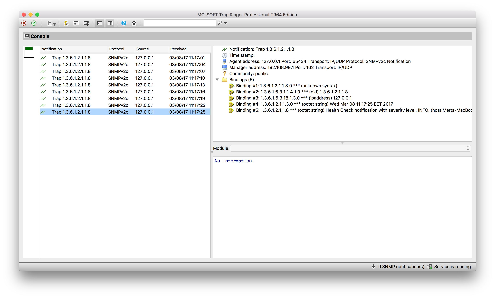

SNMP Notifier
The Simple Network Management Protocol is a standard Internet Protocol that was designed to collect and organize information about all managed devices and services that belong to the same network. SNMP is supported by a huge variety of devices, including network devices like routers, modems and switches, servers and in the latter years extended to cover IoT devices and specialized equipment connected to the cloud.
SNMP Concepts
The basic elements in every SNMP communication are the following:
- Managed Component
-
This is the device or service that is managed and monitored by SNMP, in this specific case, Payara Server.
- SNMP Agent
-
A specialized software that gathers data on the overall status of the managed component and exposes specific instructions over interfaces for its management. In our case, the SNMP Notifier acts as a SNMP agent.
- SNMP Manager
-
A server machine that runs a network management system, which is configured to monitor and manage all devices and services in a network by "talking" to the agents and gathering all relevant information.
The SNMP protocol works using PDUs (Protocol Data Units) in order to allow managers and agents to work with a defined set of instructions. The notifier currently operates using the TRAP PDU to handle notification events.
SNMP Traps
Payara Server Enterprise notifies network management systems using SNMP traps. A SNMP trap is a special PDU that is used to generate an asynchronous notification from an agent to a manager. An important point to stress with traps is that they are asynchronous events that can occur at any time, which means that a manager expects to receive updates in a PASSIVE manner, thus saving resources.
In order to correctly configure Payara Server Enterprise to send traps to a manager, the following information must be reviewed in tandem with the configuration of the manager:
- Hostname
-
This is the hostname of the server’s where the manager software resides.
- Port
-
This is the UDP port where the manager software is receiving SNMP traps. By default the protocol usually uses port 162.
- Version
-
The version used by the SNMP trap.
- Community
-
This is the community string used to "secure" the communication to the manager
- OID
-
The object identifier used by the trap in order to allow the manager to correctly interpret the status of the server.
Version
Currently, the SNMP protocol is supported on three versions: v1, v2c and v3. Version 1 is extremely unsecure since authentication is managed only with the community string. Version 2c is an enhanced version of v1 in that improves the message formats and the protocol operations, using stronger authentication guards using the simplistic community string mechanism. Finally, Version 3 improves security and remote management discarding the use of community strings.
Currently the notifier configuration only supports v1 and v2c, hence the need to correctly configure a community string as well. By default all traps are configured to use v2c, since it’s guaranteed to be supported by almost all network manager systems.
Community
The community string is used to establish trust between managers and
agents. The community names are essentially passwords; most vendors ship
their equipment with default community strings: public for a read-only
community (allows reading data values, but doesn’t allow modification)
and private for the read-write community (allowed to read and modify
data values). It’s important to change these defaults on production
environments.
The notifier configures all traps with the public community string by
default.
OID - Object Identifier
Agents expose management data as variables composed in a structured hierarchy. SNMP does not define which variables are exposed by a managed component. Instead, SNMP uses an extensible design which allows applications and services to define their own hierarchies and other metadata (such as type and description of the variable), which are described in a Management Information Base (MIB). MIBs describe the structure of the management data of a device subsystem using a hierarchical namespace composed of Object Identifiers (OID). Each OID uniquely identifies a variable sent in the SNMP trap by the agent.
In order for a network management system to understand a trap sent to it by an agent, the management system must know what the OID defines. Therefore, it must have the MIB for that trap loaded in its configuration.
The default value used by the notification service is
.1.3.6.1.2.1.1.8. This OID represents a simple octet string that is
used to hold the content of the notification event.
| In most cases there is no need to change the default OID, since its verified by most of the standard MIBs included on SNMP management systems and tools. |
Payara Server Configuration
To setup the SNMP notifier on Payara Server Enterprise you need to input the values mentioned earlier in the domain configuration. As usual you can do this using the administration web console, from the command line or editing the domain.xml configuration file directly.
| Keep in mind that the only required value to configure the notifier is the hostname of your network management system. All other values will assume the defaults discussed earlier if not configured explicitly. |
Using the Administration Web Console
To configure the Notification Service in the Administration Console, go to Configuration → [instance-configuration (like server-config)] → Notification Service and click on the SNMP tab:

From the Command Line
To configure the Notification Service from the command line, use the
set-snmp-notifier-configuration asadmin command like this:
asadmin> set-snmp-notifier-configuration --enabled=true --dynamic=true --hostname=localhost --snmpport=162 --community=public --oid=".1.3.6.1.2.1.1.8" --version=v2cYou can use the --enabled and --dynamic options to enable or disable
the SNMP notifier on demand.
Also, you can retrieve the current configuration for the SNMP notifier
using the get-snmp-notifier-configuration asadmin command like this:
asadmin > get-snmp-notifier-configurationThis will return the details of the current SNMP configuration; see below for an example:
Enabled Noisy Community OID Version Host SNMP Port
true false example .1.3.6.1.2.1.1.8 v2c 127.0.0.1 162On the domain.xml configuration file
To configure the Notification Service in the domain.xml configuration file,
locate the notification-service-configuration element in the tree and
insert the snmp-notifier-configuration element with the respective
attributes like this:
<notification-service-configuration enabled="true">
<snmp-notifier-configuration host="localhost" oid=".1.3.6.1.2.1.1.8" community="public" version="v2c" enabled="true" port="162"></snmp-notifier-configuration>
</notification-service-configuration>| Modifying the domain.xml configuration is not a supported configuration method, so be careful when considering this option. |
Troubleshooting
When you have correctly configured the SNMP notifier, it can be used to push notifications to your configured server. You can visualize the notification messages on your network management system of your choice. If you do not see any notification event messages, check the following:
-
Is the SNMP notifier enabled?
-
Is the Notification Service itself enabled?
-
Is there a service configured to use the notifier? (e.g. the HealthCheck service)
-
Is the service configured to send notifications frequently enough to observe?
-
Have you enabled the service after configuring it?
-
Does the SNMP network management supports SNMP traps?
-
Does the SNMP network management system support the configured protocol version?
-
Is the community string correctly supported by the SNMP network management system?
-
Are the SNMP management system’s MIB correctly configured to verify traps sent with the configured OID?
-
Is there a firewall between Payara Server and the network management system that is correctly configured to allow sending SNMP traps in the respective port?
Here’s a sample of how the SNMP traps are visualized using MG-Soft’s Trap Ringer software:
